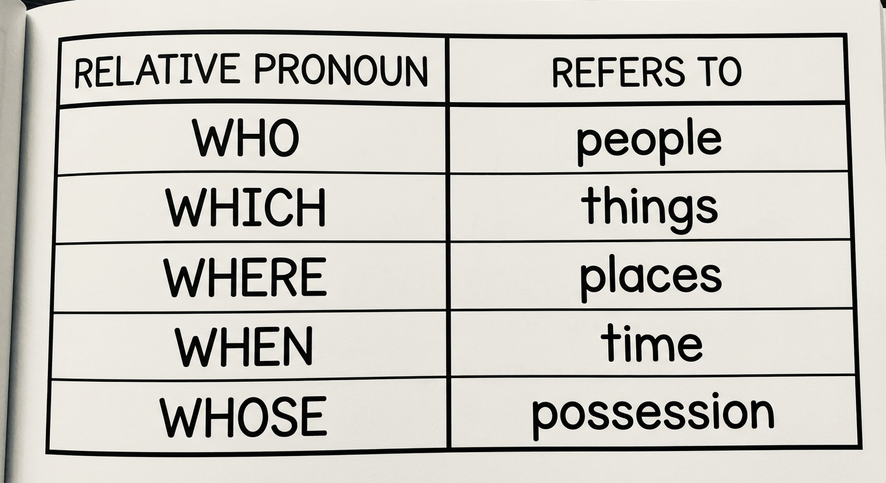
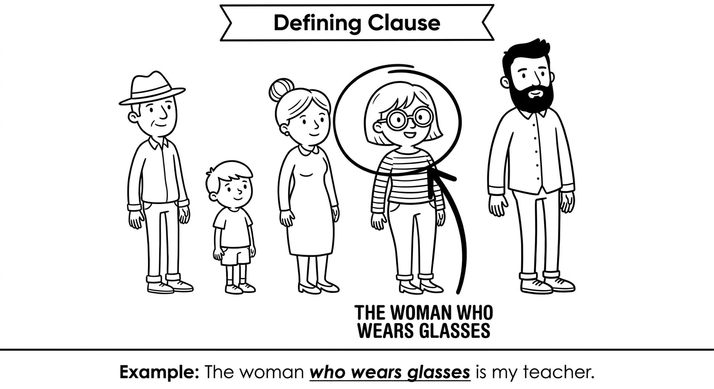
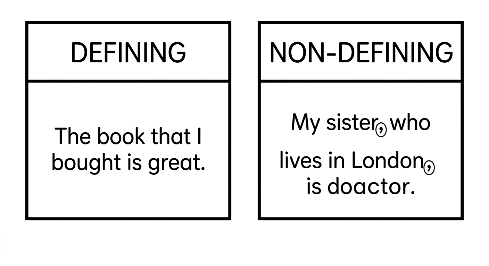
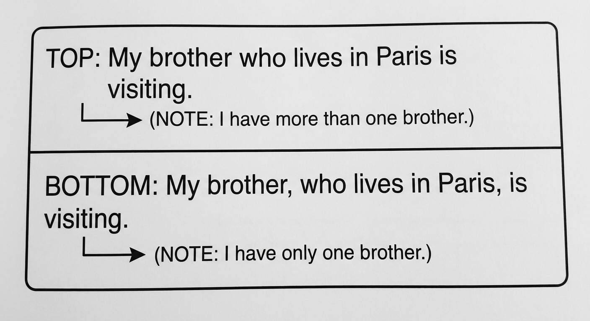
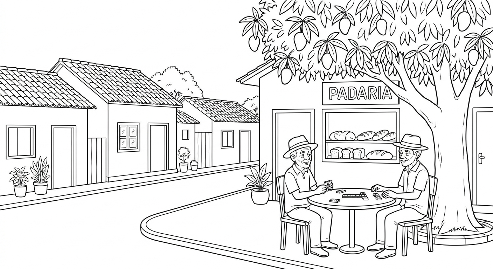

Relative Clauses & For vs To
Learn how to use relative clauses to give more information about people, things, and places. Master the difference between defining and non-defining relative clauses.

Defining Relative Clauses
Relative pronouns introduce relative clauses. They connect extra information to a noun in the main sentence.
| Pronoun | Used for | Example |
|---|---|---|
| who | people | The teacher who teaches us English is from London. |
| which | things / animals | The book which I bought is very interesting. |
| that | people or things | The movie that we watched was exciting. |
| where | places | The city where I was born is very small. |
| when | time | I remember the day when we first met. |
| whose | possession | The girl whose bag was stolen called the police. |
A defining relative clause gives essential information about the noun. Without it, we don't know which person, thing, or place we are talking about.
- No commas around the clause
- You can use who, which, or that
- The clause cannot be removed without changing the meaning
Structure: noun + relative pronoun + rest of clause
The woman who lives next door is a doctor. (Which woman? The one who lives next door.)

Examples: Defining Relative Clauses
The students who study hard usually get good grades.
Os alunos que estudam bastante geralmente tiram boas notas.
The phone which I lost was brand new.
O celular que eu perdi era novo.
She is the friend that helped me with the project.
Ela é a amiga que me ajudou com o projeto.
This is the park where we play soccer.
Este é o parque onde jogamos futebol.
Do you remember the summer when we went to Bahia?
Você lembra do verão em que fomos para a Bahia?
The man whose car broke down called a mechanic.
O homem cujo carro quebrou chamou um mecânico.
"that" vs "which" — when are they interchangeable?
- In defining clauses, you can use that or which for things: "The book that/which I read was great."
- In non-defining clauses (Unit 7.2), you must use which, never that.
- For people, use who or that in defining clauses.
Suggested time: 25 minutes
Activity: Write several sentences on the board without relative clauses (e.g., "The girl is my sister. She plays guitar.") and have students combine them using relative pronouns. This builds the intuition for when to use each pronoun.
Fill in the blanks with the correct relative pronoun: who, which, that, where, when, or whose.
Combine each pair of sentences into one sentence using a relative pronoun (who, which, that, where, when, or whose).
The teacher is very kind. She teaches us science.
The teacher who teaches us science is very kind.I bought a book. The book has 300 pages.
The book which/that I bought has 300 pages.That is the hospital. My mother works there.
That is the hospital where my mother works.The boy won the prize. His essay was the best.
The boy whose essay was the best won the prize.July is the month. Schools are on holiday then.
July is the month when schools are on holiday.The dog is very playful. It lives next door.
The dog that/which lives next door is very playful.Non-Defining Relative Clauses
A non-defining relative clause gives extra, non-essential information about the noun. The sentence still makes sense without it.
- Commas before and after the clause
- You can use who or which, but NOT "that"
- The clause can be removed without changing the main meaning
Structure: noun + , + relative pronoun + rest of clause + ,
My sister, who lives in Rio, is visiting us next week. (We already know which sister.)

Defining vs Non-Defining: See the Difference
The brother who lives in London is a doctor.
Meaning: I have more than one brother. This identifies WHICH one.
My brother, who lives in London, is a doctor.
Meaning: I have one brother. The London detail is bonus information.
The car that was parked outside belongs to my neighbor.
Meaning: Which car? The one parked outside.
My car, which is a blue Toyota, needs a new tire.
Meaning: I have one car. The blue Toyota detail is extra.
Salvador, where my grandmother lives, is a beautiful city.
Meaning: Salvador is already identified. The grandmother detail is extra.
Commas matter! They change the meaning completely:
- My brother who lives in London = I have several brothers; this one lives in London.
- My brother, who lives in London, = I have one brother; he happens to live in London.

Non-defining = extra info you could remove and the sentence still works. Try removing the relative clause: if the sentence still makes sense and identifies the noun clearly, it is non-defining and needs commas.
Suggested time: 30 minutes
Activity: Give students sentences and ask them to decide whether removing the relative clause changes the meaning. If yes, it is defining (no commas). If no, it is non-defining (commas needed). Use examples about well-known people and places to make it engaging.
Read each sentence. If it contains a non-defining relative clause, rewrite it with commas in the correct places. If it is defining, write "No commas needed."
My mother who is a nurse works at the hospital.
My mother, who is a nurse, works at the hospital. (non-defining — you only have one mother)The students who passed the exam will receive a certificate.
No commas needed. (defining — identifies WHICH students)Brazil which is the largest country in South America has many beautiful beaches.
Brazil, which is the largest country in South America, has many beautiful beaches. (non-defining — Brazil is already identified)The boy who broke the window has to pay for it.
No commas needed. (defining — identifies WHICH boy)Our English teacher who is from Canada is very patient.
Our English teacher, who is from Canada, is very patient. (non-defining — "our English teacher" is already specific)The restaurant where we ate last night was very expensive.
No commas needed. (defining — identifies WHICH restaurant)The Amazon River which flows through Brazil is the longest river in the world.
The Amazon River, which flows through Brazil, is the longest river in the world. (non-defining — the Amazon River is already identified)People who exercise regularly tend to be healthier.
No commas needed. (defining — identifies WHICH people)Select the correct sentence in each group.
Fill in the blanks with who, which, that, where, or whose. Add commas where necessary for non-defining clauses.
For vs To
In Portuguese, "para" translates to both for and to in English. But they are used in different situations!
Use to when talking about:
- Direction / destination: where someone or something goes
- Purpose with a verb: why someone does something (to + verb)
- Giving / telling / sending: the person who receives
I go to school every day.
Eu vou para a escola todos os dias.
She moved to São Paulo last year.
Ela se mudou para São Paulo no ano passado.
I study English to get a better job.
Eu estudo inglês para conseguir um emprego melhor.
He went to the shop to buy milk.
Ele foi à loja para comprar leite.
I gave the book to my sister.
Eu dei o livro para a minha irmã.
Use for when talking about:
- Benefit / who it's meant for: the person who benefits
- Purpose with a noun: what something is used for (for + noun)
- Duration: how long something lasts
- Reason: the reason for something (for + noun / -ing)
This present is for you.
Este presente é para você.
I made dinner for the family.
Eu fiz jantar para a família.
This bag is for books.
Esta bolsa é para livros.
I lived in Recife for five years.
Eu morei em Recife por cinco anos.
Thank you for helping me.
Obrigado(a) por me ajudar.
Purpose with a VERB → TO: I came here to study. (to + verb)
Purpose with a NOUN → FOR: This knife is for cutting bread. (for + noun/-ing)
Destination → TO: I'm going to the park.
Benefit → FOR: I bought flowers for my mother.
Complete each sentence with for or to.
Reading: My Neighborhood

I live in a neighborhood called Vila Nova, which is in the south of Belo Horizonte. It is a quiet area where many families have lived for generations. The street where my house is located has tall mango trees that give shade in the summer.
My next-door neighbor is Dona Rosa, who has lived here for over forty years. She is the person whose garden is always full of flowers. Everyone in the street knows Dona Rosa, who makes the best cheese bread in the neighborhood. On Sundays, the smell that comes from her kitchen is incredible.
There is a small bakery on the corner which opens at six in the morning. The baker, whose name is Seu Jorge, is a man who wakes up at four every day to prepare fresh bread. The bread that he makes is famous in our area. People who live in other neighborhoods sometimes come just to buy his pao de queijo.
The local school, which was built in 1985, is where most children in the area study. The playground where the kids play after school has a big mural that was painted by the students. My favorite place in the neighborhood is the small square where old men play dominoes in the afternoon. It is a peaceful spot where time seems to slow down.
Vila Nova, which may not be the most modern neighborhood in the city, is a place where people know each other and help their neighbors. It is the kind of community that makes you feel at home.
Pre-reading activity: Ask students to describe their own neighborhood in 2-3 sentences. This activates relevant vocabulary.
Reading strategy: Have students underline all relative clauses while reading. Then classify each as defining or non-defining.
Find six relative clauses in the text. Write the clause and classify it as defining (D) or non-defining (ND).
Clause:
Type:
Answers will vary. Examples: "which is in the south of Belo Horizonte" (ND), "where many families have lived for generations" (D), "who has lived here for over forty years" (ND), "whose garden is always full of flowers" (ND), "that comes from her kitchen" (D), "which opens at six in the morning" (D)Clause:
Type:
See above for examples.Clause:
Type:
See above for examples.Clause:
Type:
See above for examples.Clause:
Type:
See above for examples.Clause:
Type:
See above for examples.Answer the questions in complete sentences based on the text.
What is special about Dona Rosa?
Dona Rosa has lived in the neighborhood for over forty years. Her garden is always full of flowers and she makes the best cheese bread in the neighborhood.Why do people from other neighborhoods visit the bakery?
People from other neighborhoods come to buy Seu Jorge's pao de queijo because his bread is famous in the area.What is the narrator's favorite place in the neighborhood, and why?
The narrator's favorite place is the small square where old men play dominoes in the afternoon. It is a peaceful spot where time seems to slow down.What kind of community is Vila Nova, according to the text?
Vila Nova is a community where people know each other and help their neighbors. It is the kind of community that makes you feel at home.Chapter 7 - Answer Key
Exercise 1: Choose the Correct Relative Pronoun
Exercise 2: Combine the Sentences
Exercise 3: Add Commas Where Needed
Exercise 4: Choose the Correct Option
Exercise 5: Complete with the Correct Relative Pronoun and Commas
Exercise 6: For or To?
Exercise 7: Find and Classify
Accept any 6 correctly identified and classified relative clauses from the text. Award partial credit for correct clause identification even if the classification is debatable.